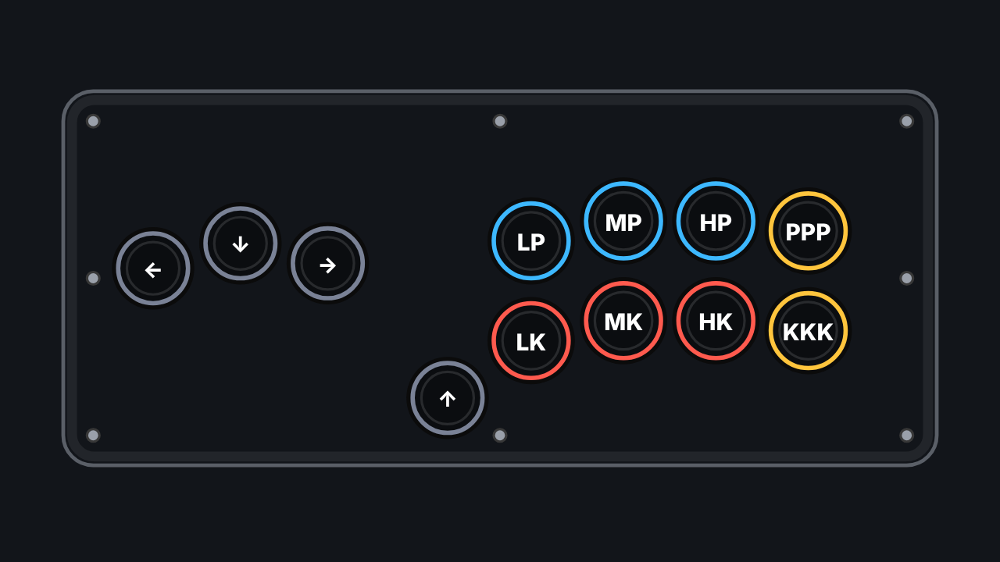

01
Inputs ao vivo
Lê o controle pela Gamepad API, ou o teclado, e mostra cada direção e botão no mesmo instante.
O InputLab mostra em tempo real o que você aperta no controle, arcade stick ou leverless, em notação numpad. Personalize as cores, salve seus presets e leve o visual para a sua stream.




O carrossel pausa ao passar o mouse, ao focar com o teclado ou com “Reduzir animações”. Para guardar suas configurações, crie uma conta.
01
Lê o controle pela Gamepad API, ou o teclado, e mostra cada direção e botão no mesmo instante.
02
Como no modo treino dos jogos: quanto tempo, em frames, você segurou cada input.
03
Reconhece 236, 214, 623, 41236 e outros, e conta quantas vezes cada um saiu certo.
04
Gera um link com fundo transparente para usar como fonte de navegador na sua stream.
Imagine o teclado numérico com o seu personagem olhando para a direita. O 5 é ficar parado; cada número é uma direção.
236
baixo → baixo-frente → frente
O especial mais comum: as bolas de fogo.
623
frente → baixo → baixo-frente
Um "Z" no direcional. Usado contra quem pula em você.
[4]6
segure trás → frente
Os colchetes indicam segurar a direção por um tempo.
As preferências ficam salvas neste navegador. Atalho: Tab navega, Esc fecha este painel.